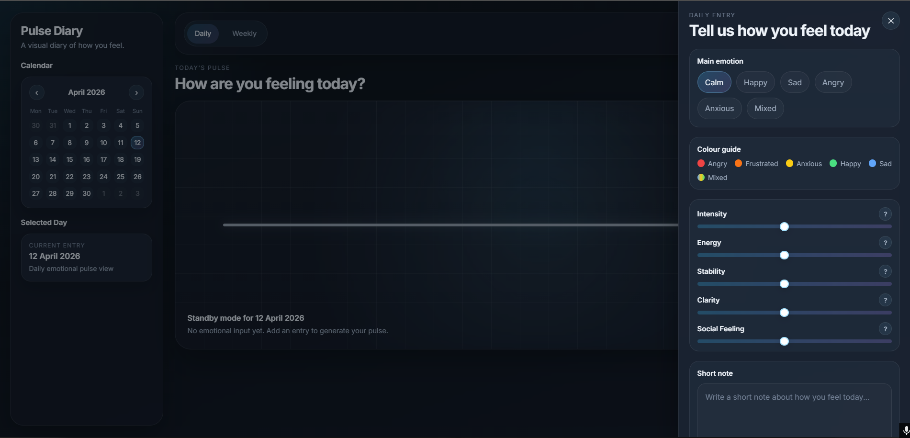
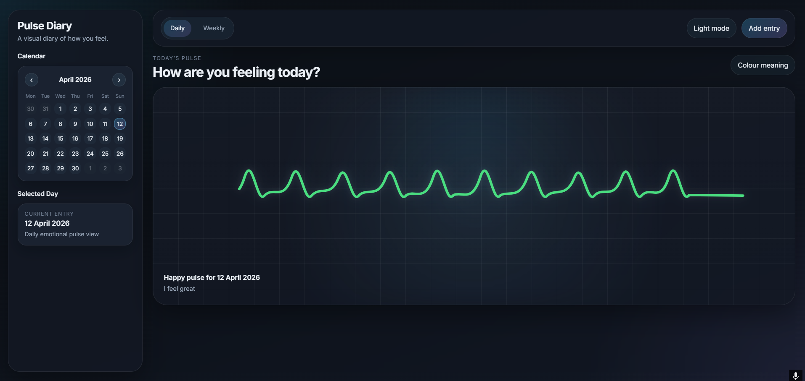
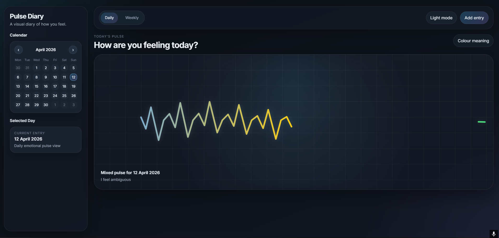
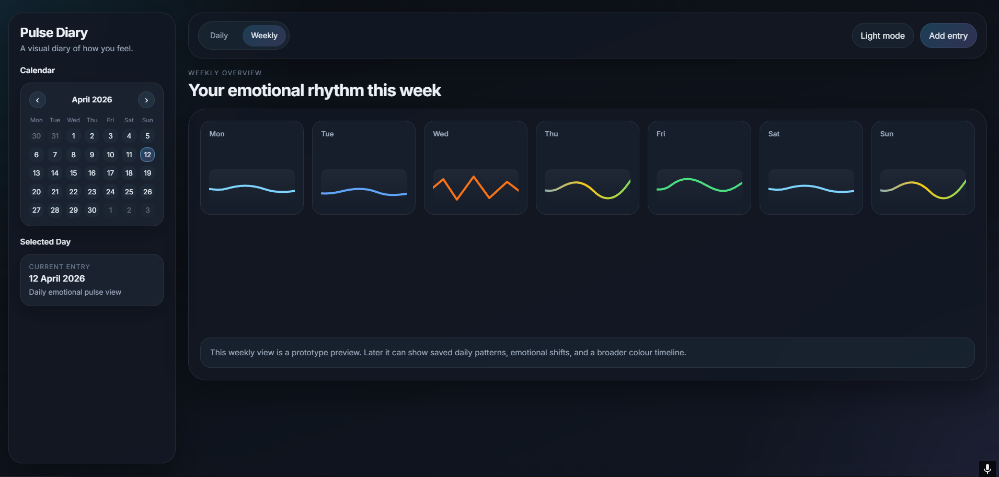
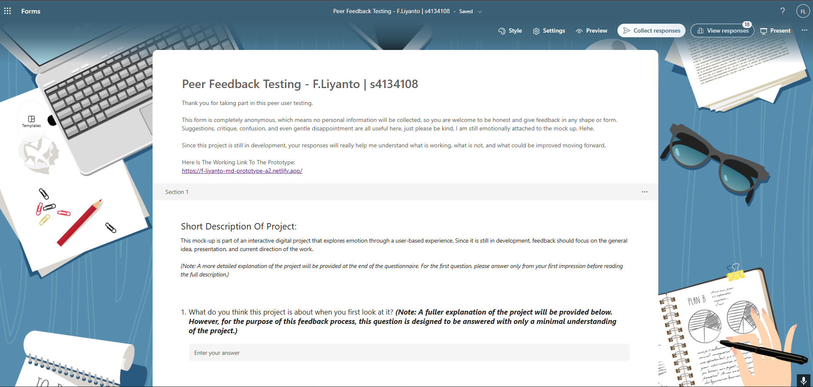
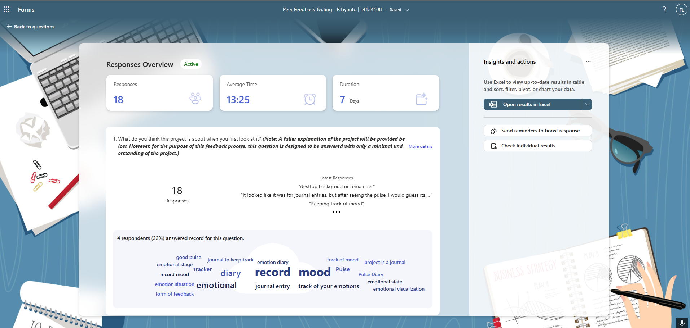

Pulse Diary is an interactive web-based prototype that explores how daily emotions can be translated into a visual pulse. Building on the initial concept developed in Assignment 1, this stage focuses on turning that idea into a functional mock-up that users can interact with and respond to through peer testing. The project invites users to record how they feel on a given day using emotional selections and adjustable input values, which then generate a pulse-based visual outcome. Rather than treating emotion as something fixed or easily categorised, the prototype explores it as layered, shifting, and personal. This page documents the development of the project so far, including its conceptual direction, technical implementation, prototype outcome, peer testing insights, and the next steps for further refinement.
Mediated Expression Portfolio
Pulse Diary Development Archive
Fatta Liyanto · s4134108
This page documents the development of Pulse Diary across multiple assignment stages. It begins with the Assignment 2 prototyping phase, then continues into later development, refinement, testing, and final reflection.
Assignment 2
Prototyping Phase
Early concept development, prototype access, peer testing, feedback reflection, and planned improvements.
Assignment 3
Prototype Development
Continued development of the prototype, including refinements, expanded features, and stronger emotional interaction.
Assignment 4
Final Reflection
Final project outcome, presentation reflection, peer comparison, and overall evaluation of the design process.
Assignment 2
Prototyping Phase
This section documents the early development of Pulse Diary as an interactive emotional reflection prototype. It covers the concept, technical approach, prototype access, peer testing, feedback reflection, timeline, and next steps.
01
Project Overview
02
Conceptual Response
Project Idea
This project explores how emotion can be translated into a visual and interactive form through a browser-based experience. Rather than treating feelings as something fixed or easily measurable, the project approaches emotion as layered, unstable, and personal.
Creative Context
The chosen creative context is a personal reflective tool. Users are invited to record how they feel on a particular day and see that emotional state represented through a pulse visualisation. This positions the project somewhere between a diary, a mood tracker, and an expressive digital experience.
Interaction Design Principle
The main interaction design principle explored in this work is feedback. The user’s emotional selections, slider values, and written note directly influence the output shown on screen. Instead of using feedback only for usability or confirmation, the project applies it as a way of turning internal feeling into visible response.
Novel Application
What makes this approach more experimental is that the pulse is not used as literal medical or biometric data. Instead, it acts as an abstract visual translation of emotion. This shifts the idea of a pulse away from physical measurement and toward emotional interpretation, allowing the interface to feel more expressive rather than purely functional.
Intended Experience
The project aims to create a space that feels reflective rather than clinical. Through movement, rhythm, colour, and visual change, the user is able to see their feelings translated into a form that is suggestive rather than literal. In this way, the project is less about accurately measuring emotion and more about creating a personal moment of mediated emotional expression.
03
Prototype Overview
Current Form
The current prototype presents the project as an interactive emotional check-in tool centred around a pulse-based visual response. It allows the user to engage with the project through a daily entry system rather than just viewing a static concept mock-up.
Main Interaction
Users are invited to record how they feel on a selected day by choosing a main emotion, adjusting a set of emotional sliders, and optionally writing a short note. These inputs are then used to generate a pulse visualisation that changes in form and colour.
Prototype Scope
At this stage, the prototype focuses on the core interaction flow rather than a fully expanded system. The daily view is the main functional area, while the weekly view currently acts as a preview of how repeated entries could later build into a broader emotional timeline.
What It Demonstrates
The prototype already establishes the overall layout, key interface elements, emotional input system, and pulse generation concept. This makes it strong enough to communicate the project direction and support peer user testing, even though some areas are still simplified or incomplete.
Role in Development
Rather than acting as a finished product, this prototype functions as a working demonstration of the project’s central idea. It was used to test how clearly the concept could be understood, how effective the interaction felt, and what areas needed further refinement before the final outcome.
04
Technical Approach
File Structure
The prototype is structured across three main files:
index.html, style.css, and
main.js. Each file handles a different part of the
experience, allowing the project to stay organised and easier to
manage during development.
HTML Structure
In index.html, I built the main interface layout of
the project. This includes the sidebar calendar, selected day
display, top navigation bar, daily and weekly view containers,
the SVG heartbeat display, and the slide-in emotion entry modal.
The HTML establishes the full interaction system before styling
or behaviour is added, making the project readable as a complete
interface at the markup level.
I also used clear class names and data attributes such as
data-view and data-emotion so
JavaScript can target interactive elements more cleanly.
CSS Styling
In style.css, I focused on turning the concept into
a visually cohesive interface. CSS custom properties are used to
manage the colour palette, spacing, shadows, border radii, and
theme values, which makes the design easier to maintain and
switch between dark and light mode.
The layout is built with CSS Grid and Flexbox, allowing the interface to separate into a sidebar and main monitor area on desktop while still collapsing responsively on smaller screens. I also used gradients, blur, glow, and shadow effects to create a more atmospheric and reflective mood rather than a plain dashboard style.
JavaScript Logic
The main interaction logic is handled in main.js. I
used a DOMContentLoaded wrapper so all interface
elements are available before any logic runs, then selected the
main buttons, sliders, modal controls, calendar days, and SVG
pulse elements through querySelector and
getElementById.
From there, I created a central appState object to
store the current view, theme, selected emotion, selected date,
whether a pulse has been generated, the slider values, and the
user’s note. This makes the prototype function more like a
state-driven system rather than a set of disconnected
interactions.
Pulse Generation
One of the most important technical parts of the project is the
way the pulse line is generated. Rather than swapping between
preset images, the prototype builds the SVG path dynamically in
JavaScript using the buildPulsePath() function.
This function reads the emotional input values and translates them into visual properties such as amplitude, jitter, recovery, and uplift. Different emotions then modify those behaviours further. For example, calm reduces amplitude and jitter, angry increases them, and anxious produces a more unstable result. The code then generates the pulse path point by point, creating either smoother curves or sharper angular changes depending on the selected emotional state.
Colour and Feedback
The colour system is also handled programmatically. A palette
object maps emotions to different colours, and the
applyLineColor() function changes the stroke of the
heartbeat line after a pulse is generated. For the mixed state,
I added an SVG gradient through a <defs>
element so the line can use multiple colours rather than a
single flat stroke.
This allows colour to act as another layer of emotional feedback rather than relying only on the line shape itself.
Interaction Flow
JavaScript also manages the wider interaction flow of the
interface. Functions such as setView(),
toggleTheme(), openModal(),
closeModal(), setEmotion(), and
selectCalendarDay() update the visible state of the
prototype and keep the layout interactive.
Event listeners are attached to the view buttons, theme toggle, modal controls, emotion chips, calendar buttons, sliders, note field, and keyboard input. This allows the interface to respond in real time as the user changes values and generates a pulse.
Current Scope
Overall, the technical approach focuses on translating emotional input into a responsive visual system through semantic HTML structure, atmosphere-driven CSS styling, and state-based JavaScript logic. The prototype is still limited in scope, particularly because the weekly view is currently more of a preview than a fully data-driven history system, but it already demonstrates the project’s core mechanism: emotional input is translated into a changing pulse as a form of mediated visual feedback.
05
Prototype Access
First Prototype
The first interactive prototype can be accessed through the link below. This earlier version represents the initial functional stage of Pulse Diary, where the main focus was testing the core idea of translating emotional input into a pulse-based visual response.
First Prototype Screenshots
Below are selected screenshots from the first prototype, showing the earlier interface layout, emotional input system, and pulse visualisation before the final refinements were added.




Final Prototype
The final completed prototype can be accessed through the link below. This version shows how the project developed after further testing, refinement, and visual polishing. Compared to the first prototype, the final version places stronger emphasis on daily emotional entries, weekly reflection, calendar navigation, personalised colours, emoji cues, and a more complete pulse diary experience.
06
Peer User Testing
Testing Method
Peer user testing was conducted during the prototype stage to gather early impressions of the project’s clarity, visual communication, interaction design, and emotional impact. Feedback was collected through an anonymous online form so participants could respond honestly and critically.
Testing Focus
The questions were designed to understand how users interpreted the project on first viewing, what changes they would suggest, how effectively the design communicated emotion, and whether the mock-up provided enough visual cues to suggest how the full experience might work when developed further.
What Was Being Evaluated
The testing focused on several key areas: layout, visual design, clarity, interaction ideas, and emotional impact. This helped identify not only what users understood easily, but also which parts of the prototype still felt too subtle, unclear, or underdeveloped.
Purpose of Testing
The main purpose of the testing was to evaluate whether the prototype was successfully translating the project’s concept into an experience that felt both understandable and expressive. It was also used to identify what aspects should be prioritised for the next stage of development.
Form Link
Peer Testing Screenshots
Below are screenshots related to the peer user testing process and form setup used to gather participant responses.


07
Feedback Reflection
Overall Response
The peer user testing responses showed that the prototype was generally understood as a mood tracking, emotional journaling, or reflective diary tool. This suggests that the core idea of the project is already legible at first glance, even before a full explanation is given. Many users were able to recognise the emotional and reflective purpose of the interface through the pulse display, date-based layout, and wording used across the prototype.
What Worked Well
One of the clearest strengths in the feedback was the layout and overall visual presentation of the prototype. Users frequently described the mock-up as polished, clear, and easy to follow. The ranking responses also showed that layout and visual design were the most successful aspects of the current version. This suggests that the project already communicates a strong structural identity and that the interface feels considered and cohesive.
Main Areas for Improvement
Although the prototype was visually well received, the weakest area was its emotional impact. Several users felt that the pulse did not yet communicate feeling strongly enough, especially when compared to the overall polish of the interface. Others noted that the interaction felt too static, the pulse changes were sometimes too subtle, or the relationship between the user’s input and the generated output was not always immediately clear.
Common Feedback Themes
A recurring pattern across the survey was the need for clearer onboarding and explanation. Some users wanted a short introduction or guidance to help them understand what the sliders meant and how their choices would affect the pulse. Another strong theme was the need for more layered emotional expression, such as allowing multiple emotions, creating more dynamic pulse behaviour, or adding stronger visual differences in speed, amplitude, and movement. A few responses also suggested that the interface currently feels slightly too polished or commercial, which may reduce the sense of emotional openness the project is trying to create.
What I Learned
The feedback made it clear that the prototype already works as a strong visual foundation, but that it now needs to develop further in how it communicates feeling. In other words, the structure is readable, but the emotional expression needs to become richer, clearer, and more immediate. This was useful because it showed that the next stage of development should not focus only on surface polish, but on deepening the relationship between the user’s emotional input and the pulse response shown on screen.
How This Will Shape the Next Iteration
Moving forward, I want to strengthen the project by improving the clarity of the onboarding, making the pulse output feel more responsive and expressive, and exploring ways to represent more layered emotional states. I also want to adjust the overall tone of the interface so it feels more emotionally inviting and less like a commercial product. These changes will help the prototype move closer to its intended goal of being a reflective and expressive digital experience rather than only a polished mock-up.
08
Planned Improvements
Expanding the Weekly View
One of the main priorities for the next stage of development is completing the weekly section so it functions as more than a visual preview. At the moment, the weekly view suggests how emotional entries could be read across several days, but it is not yet fully interactive or connected to stored daily input. Developing this section further would strengthen the project by showing emotional rhythm over time rather than limiting the experience to a single daily pulse.
Adding Emoji-Based Emotional Cues
Based on the feedback, I also want to introduce emojis as an additional layer of emotional communication. The current system already uses colour to represent different moods, and I do not want to remove that. Instead, I want to combine colour with simple emoji cues so emotions feel easier to recognise at a glance and more visually expressive. This may also help make the interface feel less clinical and more approachable.
Increasing Emotional Range
Another important improvement is expanding the range of emotional input available to the user. Several responses suggested that emotions often feel mixed or more layered than a single category can represent. Because of this, I want to explore adding more emotional options and potentially more ways for users to describe a combination of feelings rather than selecting only one simplified state.
Improving Slider Depth
I am also considering adding more sliders or refining the current slider system so the website can translate emotion in a more detailed and nuanced way. At the moment, the sliders already shape the pulse through values such as intensity, energy, stability, clarity, and social feeling. Expanding this system could make the generated pulse feel more personal and more directly connected to the user’s emotional condition.
Strengthening the Pulse Response
A further improvement will be making the pulse output feel more dynamic and expressive. Feedback showed that while the visual design is strong, the emotional effect of the pulse could be pushed further. This means developing stronger differences in movement, amplitude, speed, and visual variation so the output feels more alive and more clearly shaped by the user’s choices.
Clarifying the Experience
Another area I want to improve is onboarding and explanation. Some users understood the concept immediately, while others were unsure how the sliders and pulse were connected. Because of this, I want to refine the first-use experience through clearer prompts, better guidance, or short explanations that help users understand how their emotional input affects the visual result.
Overall Direction
Overall, the next stage of development will focus on making the prototype feel more emotionally layered, more readable, and more interactive. Rather than changing the project entirely, these improvements aim to deepen the strengths already present in the mock-up and bring it closer to its intended role as a reflective and expressive digital experience.
09
Project Timeline
Week 8 · 27 April to 3 May
In Week 8, I plan to focus on the overall visual direction of the prototype. A key aim at this stage is to move the interface away from feeling too polished or commercial and instead make it feel more expressive, personal, and emotionally engaging. This will involve experimenting with visual tone, refining the atmosphere of the website, and exploring how additions such as emojis, icons, or adjusted styling could make the project feel more open and reflective.
Week 9 · 4 May to 10 May
In Week 9, I plan to focus more heavily on functionality. This includes improving the current interaction flow, refining how user input affects the pulse output, and beginning proper development of the weekly section so it works as more than a visual placeholder. At this stage, I also want to test how more expressive input features can be integrated without making the interface feel too complex or overwhelming.
Week 10 · 11 May to 17 May
In Week 10, I will continue developing the prototype by expanding the emotional range of the system. This may include adding more sliders, improving how layered emotions can be represented, and making the pulse feel more dynamic through stronger differences in movement, speed, and visual variation. I also want to continue improving clarity so that users can more easily understand how their choices shape the final pulse output.
Week 11 · 18 May to 22 May
In Week 11, I plan to consolidate the project into a more resolved final prototype. This stage will focus on polishing the interface, checking that the main interaction flow is working clearly, and making sure the overall experience feels visually and conceptually consistent. By this point, I want the project to better reflect the feedback from peer testing and present a more expressive, refined, and complete version of the original concept.
10
Closing Reflection
Current Position
At this stage, the project has developed from an early conceptual proposal into a functional prototype that already communicates its main idea with reasonable clarity. The peer testing process showed that users were mostly able to understand the project as a mood tracking or emotional reflection tool, which suggests that the overall direction is working. At the same time, the feedback also revealed that the project still has room to grow in how strongly and clearly it communicates emotion.
Main Reflection
One of the most important things I learned through this process is that a prototype can be visually polished and structurally clear, while still needing more emotional depth. The current version already has a strong layout, a coherent system, and a readable interaction flow, but the next challenge is to make the experience feel more expressive, layered, and emotionally inviting rather than only functional.
Looking Ahead
Moving forward, I want to use the remaining development time to strengthen the emotional quality of the project, improve the weekly view, and create a stronger connection between user input and pulse output. Overall, this stage of development has been useful in identifying both the strengths of the prototype and the areas that need further refinement, giving me a clearer direction for how to resolve the project into a more complete final outcome.
Assignment 3
Prototype Development
This section is prepared for the next stage of the project, where the prototype develops beyond the initial Assignment 2 version. It can be used to document major changes, updated interaction systems, visual refinements, and new prototype links.
A3.01
Development Overview
Assignment 3 continues the development of Pulse Diary by refining the prototype after the feedback and testing stage. This section can introduce the main goals of the updated version, including what changed from Assignment 2 and what areas became the focus of further development.
A3.02
Key Changes From Assignment 2
Refined Direction
This section can describe how the project shifted after peer feedback. For example, it may discuss clearer onboarding, stronger emotional expression, more responsive pulse behaviour, or changes to the visual tone of the interface.
Design Improvements
This section can also explain how the interface was improved visually and structurally, including changes to layout, spacing, interaction flow, readability, or emotional atmosphere.
Technical Improvements
This section can be used to describe any new JavaScript, CSS, or HTML systems added after Assignment 2, especially if the prototype became more interactive or data-driven.
A3.03
Prototype Access
Assignment 3 Prototype
Add the Assignment 3 prototype link here once the correct live version is ready. This section can also briefly explain what the marker should focus on when viewing the updated prototype.
A3.04
Development Reflection
This section can reflect on what was learned during the Assignment 3 development stage. It can discuss what worked, what still felt unresolved, and how the project direction became clearer before moving into the final assignment stage.
Assignment 4
Final Reflection
This section documents the final stage of Pulse Diary, focusing on how the project evolved from a diary-style prototype into a more reflective emotional experience. It also covers the final design values, key decisions, production process, personal reflection, and peer project comparison.
A4.01
From Diary to Emotional Reflection
Paste Reflection Answer Here
Paste your answer for “From Diary to Emotional Reflection” here.
A4.02
Design Values and Interaction Approach
Paste Reflection Answer Here
Paste your answer for “Design Values and Interaction Approach” here.
A4.03
Key Design Judgments
Paste Reflection Answer Here
Paste your answer for “Key Design Judgments” here.
A4.04
Production Process, Challenges, and Learning
Paste Reflection Answer Here
Paste your answer for “Production Process, Challenges, and Learning” here.
A4.05
Reflection, Pride, and Peer Contrast
Paste Reflection Answer Here
Paste your answer for “Reflection, Pride, and Peer Contrast” here.
A4.LINK
Final Prototype Access
Final Prototype
The final version of Pulse Diary can be accessed through the link below. This prototype represents the completed version of the project after further refinement, reflection, and development across the semester.